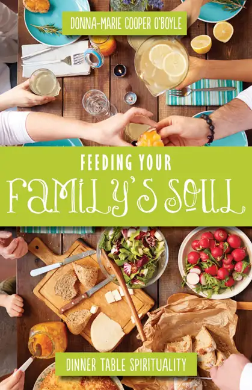

From my earliest days, Christmas and Grandma Betty have gone together. Each year in December, no matter the weather — one year it took us 13 hours to drive what should have been 5 — we would pile into our vehicle and head east on I-94 to Bismarck, N.D. from our northeastern Montana town.
Without fail, a sparkling Christmas tree, large and looming with tinsel and treasures, would greet us, along with Grandma Betty and her bright smile. Christmas seemed the pinnacle of her year and she would go overboard to make it special for us.

This is the first year we won’t have Grandma in our lives for Christmas. On Dec. 28, 2015, she left us peacefully in the night, just after celebrating her 101st Christmas. Just a few days before, I’d given my last gift to her — a package of chocolate fudge which had come from her own recipe collection, on a card that had turned yellow and chocolate-smudged through the years as she whipped up her version of this sweet treat and offered it to us as gifts. We would often hoard and fight over it!
For the past several years, Grandma had been in a nursing home, but that didn’t stop us from bringing Christmas to her in the form of our big musical family singing Christmas carols at the home. It will be strange not working that visit into our day, but we will find other ways to share our Christmas cheer in song.
Aside from fudge and Christmas decorations, however, when I think of Grandma Betty, what comes most deliciously to mind is the many hours we spent at her kitchen table, hearing stories from the past being weaved anew, each time with a unique twist. Grandma came alive when she had a captive audience, and we cherished those moments like nothing else.
And always, it was around food that these conversations happened — discussions prompted by the coming of a guest who meant everything to the world, and had given us an excuse to revel in the gift of one another — Christ the King.
I was in Adoration the other night, thinking about Christmas and memories of Grandma when I began perusing a book I recently acquired, written by my friend Donna-Marie Cooper O’Boyle. The title, “Feeding Your Family’s Soul: Dinner Table Spirituality,” (Paraclete Press) jumped out at me, and I couldn’t help but relate it to Grandma. Because as much as we enjoyed her delicious cooking, we lavished even more the love that was behind it all, and how she delighted in having us around the dining-room table, fashioning new memories together.

I love the concept of Donna-Marie’s book — that there is something sacred about gathering around the dinner table, and that we’ve got to reclaim this opportunity. In our busy world, it’s hard, but Donna-Marie wants to help us overcome the obstacles. Her book is a guide, filled with prayers, reflections and activities, that can, in a natural way, revive the blessing of making mealtime with families a time to deepen our relationship with God. It’s aimed at families with kids up to high-school age.
Which means it’s not too late for us! I feel inept in this area, and admit I’ve often succumbed to the age of busy, and not claimed dinner time as the chance that it is to connect with one another and also, with God. And yet, that’s really what it should be about. Studies have been done on the importance of family meals to keep a family intact; it’s no small matter. Our cohesiveness may well depend on what happens at dinner time. So I appreciate Donna-Marie’s book and find hope in it.
While absorbing “Feeding Your Family’s Soul,” I happened upon one of the recipes Donna-Marie has tucked within and became very excited. Her “Overnight Christmas Blueberry-Pecan French Toast,” which has a special story attached, seems like something Grandma would have enjoyed preparing and sharing with our family. So I’m determined to start a new tradition, in honor of Grandma. Along with remembering what is past and so dear, when our family gathers this year for Christmas with my mother, who now lives in my grandma’s home, I want to create something to warm tummies and welcome Christ and one another into our midst. It should work perfectly since we will arrive Christmas Eve Day, in time for me to prepare this dish before our midnight jaunt to Christmas Mass at the Cathedral of the Holy Spirit. In the morning, it will be ready to be plopped in the oven, and, I hope, will bring comfort and sweetness to the 14 of us gathered.
I won’t give away the neat story that goes along with this recipe — I’ll let Donna-Marie do the honors when you buy her book (which I’d highly recommend). She is great at offering little gems of light-in-the-darkness moments she encounters and helps initiate. But I do want to at least make sure you have the recipe in time for your own Christmas-morning meal.
Donna-Marie’s Overnight Christmas Blueberry Pecan French Toast
You’ll need: nonstick spray, 1-1/2 to 2 French baguettes cut into 20 one-inch slices, 6 to 8 eggs, 3 C. milk, 1 C. brown sugar or honey, 1 to 2 tsp. vanilla extract, nutmeg, cinnamon, 1 C. pecans (toasted), 2 C. blueberries (fresh or frozen)
Directions: Coat a 9 x 13-inch baking pan with nonstick spray and arrange baguette slices in a single layer in the dish. (Donna-Marie says she often makes more than one layer.) In a large bowl, whisk together eggs, milk, three-fourths of the brown sugar or honey, vanilla, nutmeg and cinnamon. Pour the mixture evenly over the bread.
Cover and chill overnight. “There will appear to be a lot of moisture when the mixture goes into the refrigerator,” Donna-Marie says, “but most of it will soak into the bread throughout the night.”
Just before baking, sprinkle over the top the remaining brown sugar or honey, the pecans and blueberries, and bake in a 350-degree F oven for about 45 to 60 minutes or until golden and bubbling. Donna-Marie suggests checking it around 45 minutes, and then keeping an eye on it for the remainder of time. “It should be a light golden brown on top, and the egg mixture should be completely cooked.”
She also recommends serving this dish with pure maple syrup, and for an added treat, heating the syrup with extra blueberries to make blueberry-flavored syrup. “You can serve with fresh fruit on the side and breakfast sausage or bacon, too. Enjoy.”
I reached out to Donna-Marie to ask how much this serves and she said six to eight people, so I will be doubling my recipe as Donna-Marie does for our crew!
Q4U: What memories of Christmases around the dinner table most warm your heart?